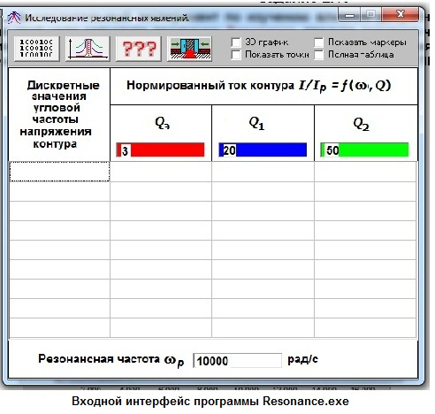
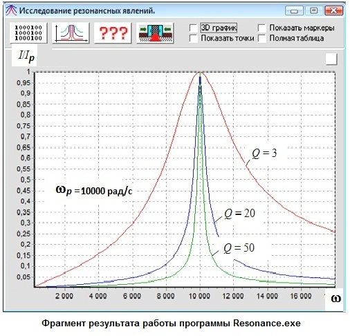

|
Провести вычислительный эксперимент по изучению влияния добротности на ширину полосы пропускания контура. Для этой цели запустите программу Resonance, введите значение частоты, например, ωРН = 10000 рад/с и три значения добротности Q: 3, 10, 50. Определите соответствующие значения полос пропускания Δω контуров. Примечание. Корректно отображаются надписи на модели при работе на ПК с браузером MSIE6 и ОС ХР/2000 Windows.

|
| ||